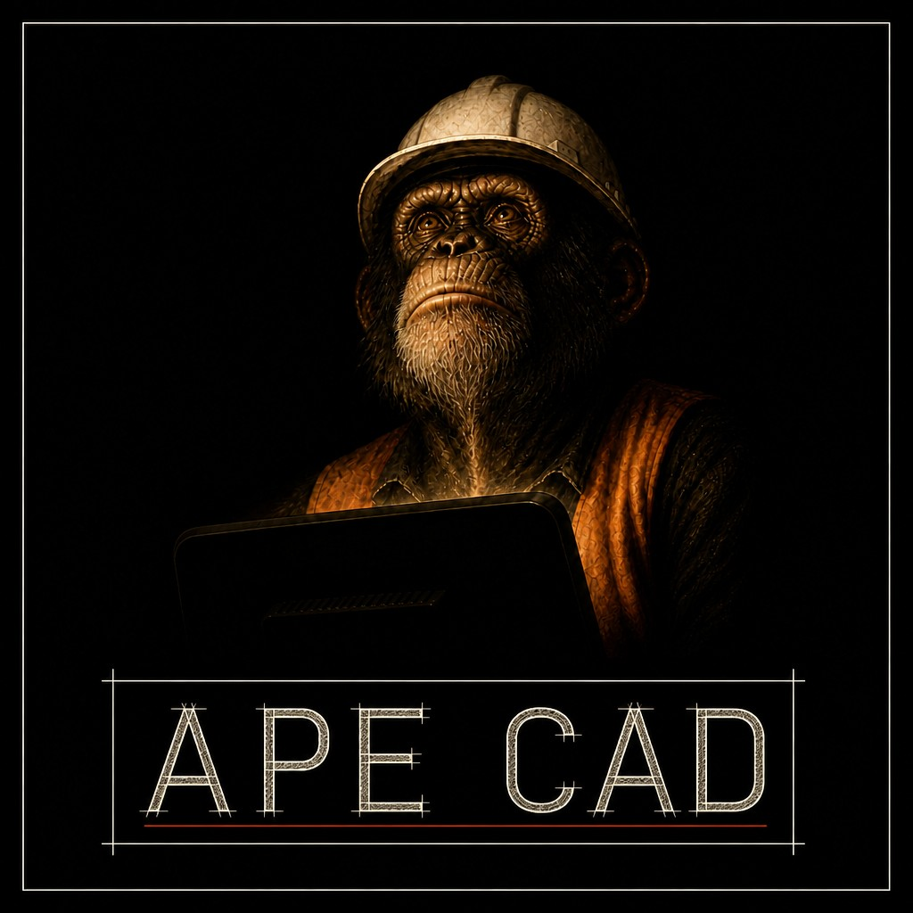
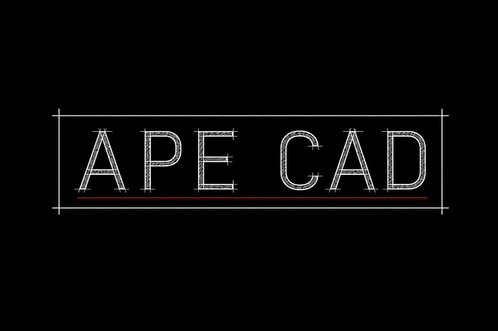

Put down a draft
Points, lines, boxes, labels. Not a paragraph about a building.
APE-CAD · SHEET 01 · PRE-ALPHA
APE Ingeniería · spatial scratchpad
A three-dimensional napkin. Lines, boxes, and labels — so nobody has to describe a building in paragraphs.
Document · scroll down
apeCAD is a standalone Python library: a spatial language that humans and agents share. You put down a labeled 3D draft. Downstream libraries consume it. The drawing window is a client. The Python document is the language.
Points, lines, boxes, labels. Not a paragraph about a building.

The scratchpad emits ops. It does not own geometry, undo, or names.

apeGmsh meshes. apeSteel takes the frame. Studio shows and picks.
One process, one document. Sketch on the XY plane
(z = 0). The canvas posts ops to Python.
git clone https://github.com/nmorabowen/apeCAD.git
cd apeCAD
pip install -e ".[dev]"
python -m apeCAD
Opens http://127.0.0.1:8765 (or the next free port).
python -m apeCAD --no-browser --port 8765 if you already
have a tab.
Product and architecture live in AProjects/ — ADRs, memory, specs. Locked: spatial scratchpad, Python document, web client, kernel-free v0.
Status: pre-alpha 0.0.0. MIT. Python ≥ 3.11. Brand in
logo/.